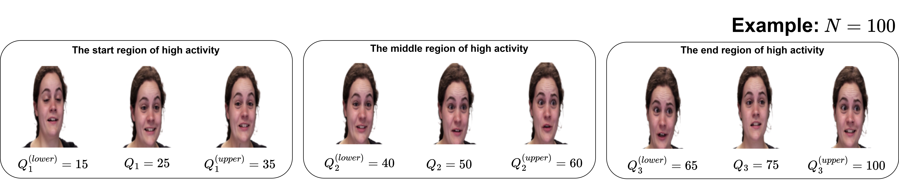

Multi-modal deep learning uses several data modalities, such as text, audio and video. Hence, it emerged as a potential approach to improve the accuracy of predictive systems. This technique has been explored in various tasks, with emotion recognition being particularly notable. However, successful blending of the feature sets generated from the multiple modalities remains a challenging task.
In this paper, we propose a multi-modal architecture for emotion recognition. It effectively combines long-term connections and captures information from both audio and video inputs. Our method utilises a pre-trained R(2+1)D network to process video inputs by effectively capturing the time and space specifics through a combination of 2D and 1D convolutions in a residual learning framework. For audio inputs, several acoustic features such as Root-Mean-Square (RMS), Zero-Crossing Rate (ZCR), Mel-Frequency Cepstral Coefficients (MFCC), and the Mel-Spectrogram averaged along the time domain (Mel) are fed to their audio networks that incorporate 1D CNNs with a Squeeze-and-Excitation (SE) network at the end. These extracted features are combined and passed through a Softmax classifier for emotion prediction.
The proposed model is evaluated on the Ryerson Audio-Visual Database of Emotional Speech and Song (RAVDESS), the Surrey Audio-Visual Expressed Emotion (SAVEE), and the Crowd Sourced Emotional Multimodal Actors Dataset (CREMA-D) datasets. The results demonstrate the effectiveness of our approach, achieving F1 scores of 0.9711, 0.9965, and 0.8990 respectively, competing fairly with the state-of-the-art methods.

@article{park2021nerfies,
author = {Park, Keunhong and Sinha, Utkarsh and Barron, Jonathan T. and Bouaziz, Sofien and Goldman, Dan B and Seitz, Steven M. and Martin-Brualla, Ricardo},
title = {Nerfies: Deformable Neural Radiance Fields},
journal = {ICCV},
year = {2021},
}